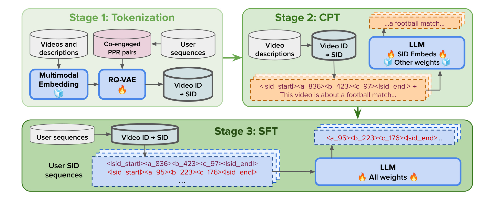
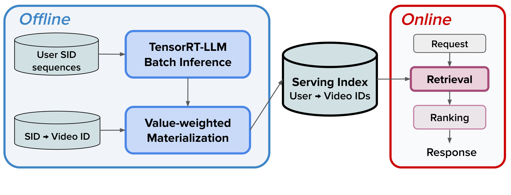
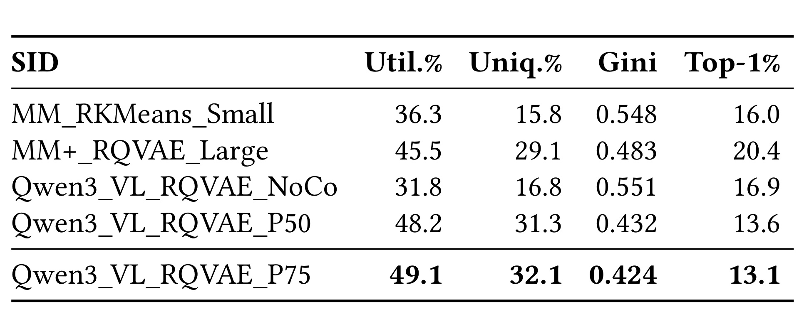
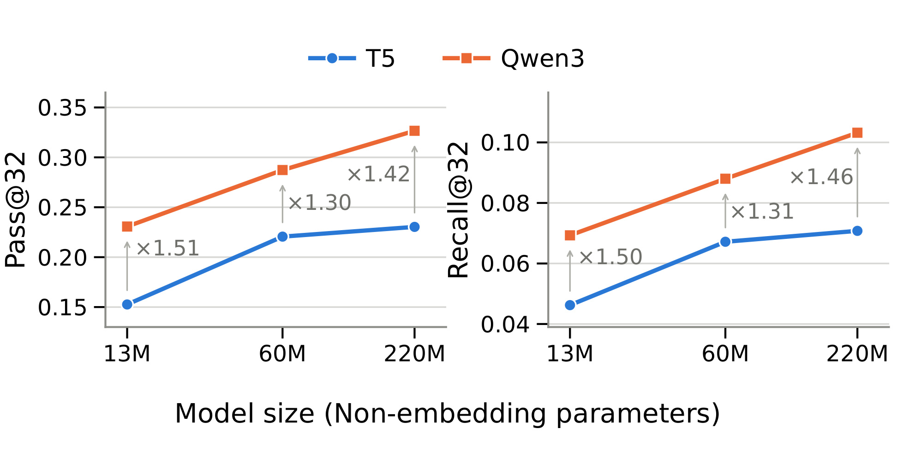
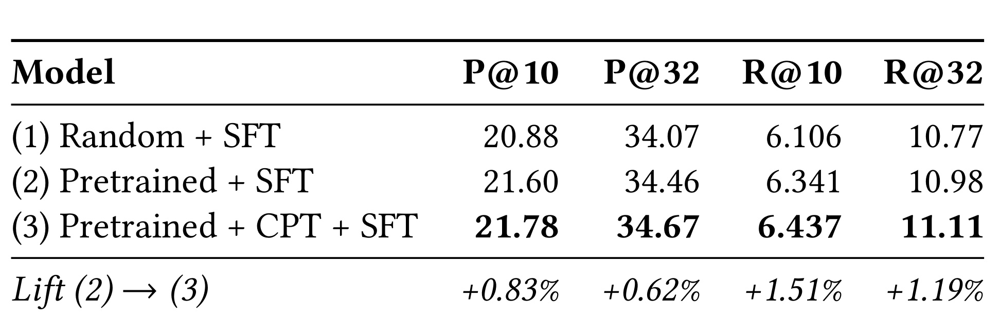
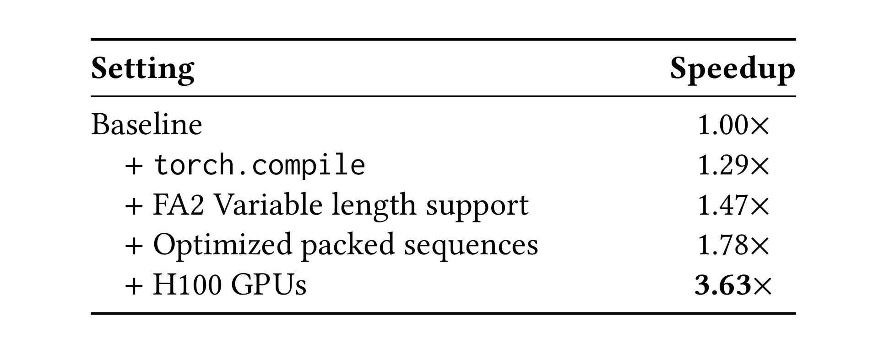
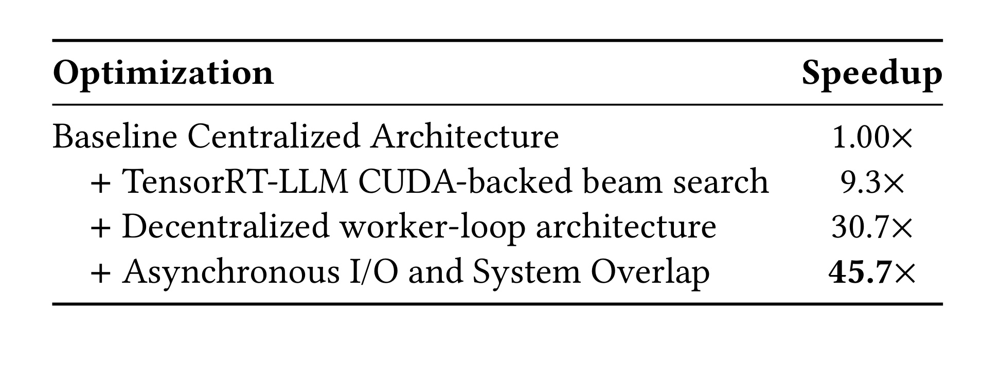
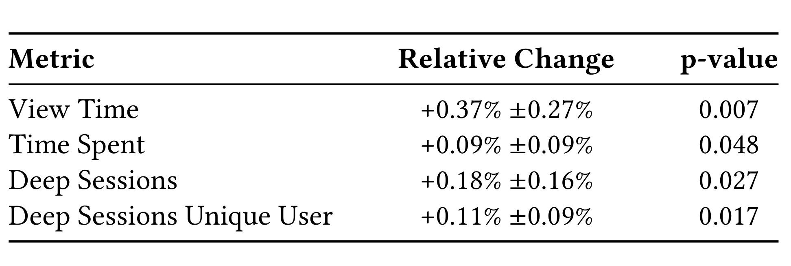

SnapLGR：面向 Snapchat 内容推荐的 LLM 生成式召回
《LLM-Based Generative Retrieval for Snapchat Content Recommendation》由 Liam Collins、Jiwen Ren 等 Snap Inc. 研究者完成，研究对象是 Snapchat 短视频推荐中的大规模候选召回。论文的唯一入口是 arXiv:2607.28895。当前公开材料只能按 2026 年 7 月 30 日提交的 arXiv v1 理解：稿件页眉仍是 Conference’17，会议名、ISBN 与 DOI 都保留占位符，因此不能推断已经被某个会议接收或正式出版。本轮也没有核验到独立的官方代码仓库；这是一篇工业生产系统报告，不等于实现已经开源。
预训练 LLM 并不知道推荐系统新引入的 SID 词表；即使把它换进生成式召回，模型仍可能遭遇语义落地不足、离散码碰撞、无效标识生成，以及宽 beam 在严格 GPU、延迟和周期更新预算下无法运行。SnapLGR 要回答的是：表示、训练和服务必须怎样共同设计，才能把这种模型真正接入大规模内容推荐并产生可核验的线上收益。
1. 背景和问题
1.1 从“检索物品”改成“生成标识”
大规模推荐通常先用召回把海量内容压缩成候选集，再交给排序模型精排。TIGER 一类生成式召回改变了第一步的形式：系统不再直接学习用户向量与每个物品向量的近邻关系，而是把物品压成由多级离散 token 组成的 Semantic ID（SID），再根据用户历史自回归生成未来可能交互的 SID。多个物品可以共享 SID 前缀，因此模型能够在序列空间中利用跨物品结构；用少数 codebook 的组合表达大量物品，也避免为每个视频维护完全独立的输出类。TIGER 的典型骨干是从头训练的小型 T5 编解码器，SnapLGR 则试图利用预训练 decoder-only LLM 已有的语义先验、序列建模能力和可预测的规模收益。
把骨干换成 LLM 并不是一次局部替换。首先，SID 是召回器与物品库之间的接口：如果多模态编码只保留表面语义，可能缺少“哪些视频被同一批用户共同观看”的协同结构；如果 codebook 使用不均，大量视频会碰撞到少数 SID，生成正确 SID 后仍要在巨大桶中猜视频。其次，新添的 SID token 从未出现在语言模型预训练中，随机初始化后和模型已有的文本语义空间没有对应关系。直接用用户行为做 SFT，既要求模型同时理解新词，又要求它学习时序偏好，预训练知识能否真正转化为推荐增益并不确定。
SID 碰撞在这里不只是表征学问题，还会沿链路放大。若一个热门 code 聚集过多视频，生成模型看似命中了正确语义，物化阶段却必须在更大的桶内依赖另一套价值分数挑选视频；召回模型的分辨能力被转移给了后处理。反过来，若追求每个视频完全唯一，层级 token 的共享结构又会减弱，模型难以借相近内容的共同前缀泛化。生产 tokenizer 因而要同时守住三条线：让离散空间被充分使用、控制头部桶集中度，并保留与用户行为一致的邻近关系。论文使用 utilization、uniqueness、Gini 与 Top-1% coverage 四个互补指标，就是为了避免把“唯一率更高”简单等同于“推荐一定更好”。
第三个困难来自生产链路。用户历史与视频库持续变化，模型不能训练一次就停；论文的生产节奏是 CPT 在基础模型阶段执行一次，而 SFT 之后按小时增量更新。宽 beam 生成又是短序列、高分支的特殊负载，传统 Python beam search 会把打分、KV-cache 分叉、调度和设备拷贝暴露在关键路径上。更重要的是，一个 SID 往往对应多个视频，模型输出不能直接当候选，还需要按业务价值从 SID 桶中物化具体视频。如果每个线上请求都同步运行 LLM、beam search 和物化，成本与尾延迟都难以控制。
1.2 论文真正回答的两组问题
作者把研究目标明确拆成两问。第一问是系统设计：视频表示、SID 离散化、新词表落地、用户序列训练、SID 到视频物化以及离线批推理，怎样形成闭环，并在 GPU 预算内周期运行？第二问是证据归因：相对既有 TIGER-style T5 系统，SnapLGR 的线上业务收益是多少；在固定 tokenizer 的离线实验中，收益究竟来自 decoder-only 架构、模型规模、预训练、CPT 还是 SID 质量？
这一区分很关键。线上 A/B 比较的是完整上线方案，tokenizer、骨干与服务栈同时变化，能说明“整个 SnapLGR 系统是否有效”，却不能单独证明某个模块造成提升。离线归因则刻意固定 Qwen3-VL SID、训练数据和评估协议，用匹配规模的 T5/Qwen3、随机/预训练初始化以及有无 CPT 的对照拆解来源。论文最值得读的地方不是某个单点数字，而是把表示学习、后训练、物化和基础设施的证据放在同一条生产链中，同时承认不同实验回答的是不同层级的问题。
2. 方法
2.1 多模态、行为感知的 SID：RQ-VAE 与 PPR
每个视频先由 Gemini 2.5 Flash 生成文本描述，再与视频内容一起输入 Qwen3-VL-Embedding-8B。附录说明系统取其 4096 维向量的前 1024 维，利用该模型的 Matryoshka 表示性质，把图文信息映射为联合向量 (\mathbf e_i=\phi(v_i,t_i))。RQ-VAE 的编码器对 LayerNorm 后的向量生成初始残差；第 (\ell) 层在 codebook (\mathcal C_\ell) 中选与当前残差余弦相似度最高的 code，再从残差中减去该 code。论文使用三层 codebook，生产配置宽度为 ((1024,512,256))。核心递推为：
符号解释：(i) 是视频，(\ell) 是量化层，(\mathbf r_i^\ell) 是进入该层的残差，(\mathcal C_\ell[c]) 是第 (c) 个 code 向量，(K_\ell) 是 codebook 宽度，(z_i^\ell) 是离散选择。第一层逼近主要语义，后续层编码前层未解释的残差；完整 SID 是 (\mathbf z_i=(z_i^1,\ldots,z_i^L))。如果 codebook 塌缩，argmax 会反复选少数行，离散空间的理论容量并不会转化为有效容量。
为让硬选择可训练，SnapLGR 沿用 hard-forward、full-codebook straight-through estimator。令 (\mathbf a_i^\ell) 为全部余弦分数的 softmax，前向仍使用硬 code，反向则利用一对数值相消、梯度不相消的项：
符号解释：(\widetilde{\mathbf q}_i^\ell) 是带直通梯度的量化向量，(\mathbf a_i^\ell) 是对所有 code 的软权重，(\operatorname{sg}) 表示停止梯度。后两项在前向数值上抵消，因此 SID 仍是确定的硬分配；反向时最后一项不传梯度，未被 argmax 选中的 codebook 行也能通过软权重获得信号。重建损失与 commitment 损失分别约束信息保真和残差/code 对齐：
符号解释：(N) 是 batch 视频数，(d) 是重建归一化维度，(d_q) 是量化残差宽度，(\widehat{\mathbf x}i) 是 decoder 的重建，(\mathbf q_i^\ell=\mathcal C\ell[z_i^\ell])。第一项要求离散组合重建原多模态表示；commitment 的两部分分别把编码残差拉向已分配 code，并把 code 更新到残差附近。LayerNorm、正交初始化与 L2 归一化共同降低 codebook 塌缩风险。
仅有图文语义仍不够。作者从用户—视频二部图中取每个 anchor 视频的两跳邻域，使用 Personalized PageRank 选择共参与正样本：
符号解释：(\boldsymbol\pi_i) 是以视频 (i) 为中心的稳定 PPR 分数，(\mathbf e_i) 把重启质量集中在 anchor，(\mathbf P) 是行归一化转移矩阵，(\alpha) 是继续随机游走的概率。重启项让相似性停留在局部共参与结构，而不是被全局热门节点吸走。生产中作者保留分数高于全体 pair 的 P75 阈值。量化 latent 之和经投影与归一化得到 (\mathbf g_i)，再以 PPR pair 为正样本做批内对比：
符号解释：(B) 是共参与 pair 数，(i_p) 是 anchor，(i_p^+) 是 PPR 正样本，其余正样本侧视频充当批内负例，(\tau) 是温度。最终 tokenizer 目标是 (\mathcal L_{\mathrm{rec}}+\lambda_{\mathrm{com}}\mathcal L_{\mathrm{com}}+\lambda_{\mathrm{co}}\mathcal L_{\mathrm{co}})。PPR 并不是给 LLM 额外输入一个图特征，而是在 LLM 训练前改变离散物品词表的几何结构：共同被用户参与的视频更可能共享层级 code，同时仍受重建和碰撞约束。
2.2 CPT 再 SFT：先落地新词表，再学习行为序列
tokenizer 产出 video-to-SID 映射后，系统把各层 SID code 连同开始/结束标记追加到 Qwen3-0.6B 词表。新 embedding 从与原词 embedding 相同均值、协方差的高斯分布初始化。CPT 输入 SID，要求模型生成对应视频的文本描述；此时只更新新增 SID embedding，其余 LLM 权重冻结。原文没有给 CPT 编号公式，但按其“只在描述 token 上计算损失”的文字定义，可写成：
符号解释：(\mathcal T_{\mathrm{desc}}) 是视频描述的输出位置，(x_t) 是第 (t) 个描述 token，(\mathbf z_i) 是输入 SID，(\theta_{\mathrm{SID}}) 仅指新增 SID embedding。这个阶段不是训练推荐偏好，而是让新 token 能调用模型已有的文本语义。CPT 在基础模型训练阶段执行一次，覆盖较广的视频描述语料。
随后 SFT 使用 ChatML：user 部分放按时间排序的历史 SID，assistant 部分放未来参与事件，只对 assistant token 计算损失，并放开全部模型权重。其自回归目标可忠实展开为：
符号解释：(\mathbf z_{1:h}) 是用户历史 SID 序列，(\mathcal T_{\mathrm{future}}) 是未来事件输出位置，(y_t) 是待生成 SID token，(\theta) 包含全部 LLM 参数。CPT 解决“新词是什么意思”，SFT 解决“这个用户下一步会参与什么”；前者一次性建立起点，后者按小时增量训练以追随兴趣与内容分布。两阶段并不保证 CPT 的纯文本几何会永久保留，实验实际上显示 SFT 会明显重塑它。

Figure 1 把三个数据边界画得很清楚。Stage 1 中，视频与描述进入冻结的多模态 embedding，用户序列只用来构建 PPR 共参与 pair；真正训练的是 RQ-VAE，输出 video ID 到 SID 的映射。Stage 2 读取该映射和视频描述，只有 SID embedding 处于训练状态，普通 LLM 权重保持冻结，输出目标仍是自然语言描述。Stage 3 才把用户 video ID 序列转换成 SID 序列，解冻全部 LLM 权重并生成未来 SID。因而 CPT 不是多余的 SFT 预热：它把“词表接入”与“行为任务适配”分开，也让后续离线实验能够分别问初始化、CPT 与 SFT 各贡献多少。图中的冰冻与火焰标记还给出了明确的复现检查点：若 CPT 阶段误更新普通权重，就不再是论文用于隔离词表 grounding 的实验设置。
2.3 从 SID 到视频：物化与在线服务
模型每天离线读取历史用户 SID 序列，用 TensorRT-LLM 批量生成每个用户的 top-(k) 未来 SID。SID 是语义桶，不是唯一视频 ID，因此系统维护 SID-to-video lookup，每个桶最多保留固定数量候选，并用多目标线性价值函数排序：
符号解释：(i) 是候选视频，(\mathcal M) 是下游参与指标集合，(S_m(i)) 是视频在指标 (m) 上的估计率，(w_m) 是业务权重，(V(i)) 是桶内物化排序值。论文没有公开具体指标集合、权重或每桶上限，因此这里只能确认线性多目标形式，不能推断线上策略细节。物化后得到 user-to-video 列表并写入低延迟 serving index。

Figure 2 说明 SnapLGR 的在线成本控制来自架构切分，而非让 LLM 本身达到请求级低延迟。左侧 Offline 区域中，用户 SID 序列进入 TensorRT-LLM batch inference；生成结果与 SID→Video ID 表在 value-weighted materialization 汇合，写成 user→video IDs 的 serving index。右侧 Online 区域收到请求后，只从索引取预物化视频，再送排序与响应，LLM 不在请求关键路径上。代价是候选新鲜度由按日批推理、SID 映射和索引更新共同决定；若内容或兴趣在两个物化周期之间快速变化，系统需要靠其他召回源或下游排序弥补。复现时还需把生成失败、空桶与过期视频的回退策略纳入索引验收，论文没有公开这些异常路径。
2.4 训练与推理吞吐：两条独立优化链
训练侧依次使用 torch.compile 降低 Python 与算子开销、FlashAttention-2 variable-length kernel 直接处理无 padding 序列、dynamic sequence packing 把多条历史拼成连续 buffer；最后从 8×A100-80GB 迁移到 8×H100。推理侧的问题不同：beam width 32 下，原实现只有约 12%–15% wall time 真正在 GPU decoding，瓶颈主要是 Python beam scoring、KV-cache 分叉和集中式调度。系统于是换成 TensorRT-LLM CUDA beam search，让 beam 扩展、打分与 KV 管理留在 GPU；再让每个 worker 自主领取 Parquet shard，取消中心 driver fan-out；最后用后台 row-group 预取、异步写线程池和非必要 CPU 指标门控隐藏 I/O。论文 Tables 6–7 的“加速”都是 samples/s/GPU 的累计比值，可统一写成：
符号解释：(s) 是某个累计优化状态，分子是该状态的每 GPU 吞吐，分母是对应实验链的旧基线。训练与 serving 的分母不同，不能把 3.63× 和 45.7× 当作同一实验横向比较；3.63× 还包含 A100→H100 的硬件变化，而 45.7× 是相对旧 A100 Python/集中式 serving 的每 GPU 吞吐。
3. 实验结果
3.1 SID 与 CPT：表示质量和词表落地
SID 质量首先用四个指标评估：Utilization 是实际占用离散空间的比例；Uniqueness 是拥有唯一完整 SID 的视频比例；Top-1% coverage 是最大 1% SID 桶覆盖的视频比例；Gini 汇总碰撞分布集中度。后两者越低，视频越不集中于“超级碰撞桶”。所有方案在同一大规模视频 cohort 上比较；MM_RKMeans_Small 使用 ((256,256,256))，其余使用 ((1024,512,256))。

Table 1 的关键对照是同一 Qwen3-VL RQ-VAE 从 NoCo 到 P50/P75。加入 P50 共参与监督后，utilization 从 31.8% 升到 48.2%，uniqueness 从 16.8% 接近翻倍到 31.3%；Gini 从 0.551 降到 0.432，最大 1% 桶覆盖从 16.9% 降到 13.6%。把阈值提高到 P75 后四项继续小幅改善为 49.1%、32.1%、0.424、13.1%，说明主要收益来自引入经过筛选的协同 pair，P50→P75 是边际精炼。MM+_RQVAE_Large 的 Top-1% coverage 反而达到 20.4%，也提醒更多多模态特征不自动保证更均衡的离散分配。
CPT grounding 用 Text-Grounding RSA 衡量 SID embedding 与对应文本 embedding 的成对距离排序是否一致。随机初始化 RSA 只有 0.016；CPT 后升到 0.322，证明 SID token 已被锚定到 LLM 的文本知识空间。但 CPT+SFT 后降到 0.167，几乎接近 SFT-only 的 0.162。这个结果不是 CPT 失败，而是 SFT 的协同序列目标会主动重塑 embedding，使纯文本几何让位于行为关系。后面的 Table 4 才回答“这种短暂的初始化优势是否仍改善最终召回”。
3.2 固定 tokenizer 后，增益来自哪里
离线评估固定 Qwen3-VL SID、训练数据和协议：SFT 取一天数据，评估紧随其后一小时，最多十个未来 item 作为标签，beam width 32；CPT 使用截至 SFT 日期一周前的一个月视频语料。主指标是 SID-level Pass@(k) 与 Recall@(k)。相对 13M T5，SnapLGR 的 P@10 为 21.78 对 8.685（2.51×），P@32 为 34.67 对 15.26（2.27×）；R@10 为 6.437 对 2.672（2.41×），R@32 为 11.11 对 4.624（2.40×）。这是总体差距，仍需继续拆分。
Pass@(k) 只要求 top-(k) 生成 SID 与未来集合至少有一次相交，回答“这一请求有没有命中”；Recall@(k) 则按未来集合大小归一化，回答“标注未来项覆盖了多少”。两者共同上升，排除了只靠少数容易样本提高请求命中率、却没有扩大未来覆盖的简单解释。不过这些实验发生在 SID 层、尚未经过 value-weighted materialization；SID 指标翻倍不等于最终 video recall 或线上时长也会等比例增长。Table 5 的 video-level 结果和 Table 8 的业务指标分别承担后两级验证。

Figure 4 只使用随机初始化、SFT-only 模型，因此排除了预训练与 CPT。Qwen3 decoder-only 在 13M、60M、220M 三个匹配规模上都优于 T5；13M 时 Pass@32 和 Recall@32 分别是 1.51×、1.50×，60M 为 1.30×、1.31×，220M 为 1.42×、1.46×。两类模型扩大参数都会提升，但饱和节奏不同：T5 从 13M 到 60M 的 Pass@32 增长 44.6%，60M 到 220M 只增 4.4%；Qwen3 后一段仍增 14.3%。尤其 T5-220M 的 Pass@32 为 23.03%，几乎等于 Qwen3-13M 的 23.07%，因此作者把架构视为最大可隔离效应，而非简单“参数更多”。

Table 4 在同一 Qwen3-0.6B 与 Qwen3-VL SID 上拆初始化。Random+SFT 到 Pretrained+SFT，P@10 从 20.88 升到 21.60，P@32 从 34.07 到 34.46，R@10 从 6.106 到 6.341，R@32 从 10.77 到 10.98；说明通用预训练权重确实提供增量。在此基础上加 CPT，四项达到 21.78、34.67、6.437、11.11，相对 Pretrained+SFT 的增幅依次为 0.83%、0.62%、1.51%、1.19%。CPT 的效果稳定但小于架构效应；它的价值更像改善优化起点，而不是让最终 embedding 永久保持文本形状。
tokenizer 消融也呈现相同的“有帮助但不是全部”。在 SFT-only Qwen3-0.6B 中，Qwen3-VL SID 的 SID-Recall@32 为 10.98，Video-Recall@32 为 2.765，高于 MM 的 10.58/2.720 与 MM+ 的 10.30/2.616。不过 MM 虽然碰撞分布比 MM+ 差，召回却更好，说明 utilization、Gini 等是可靠物化的必要条件，却不是端到端召回质量的充分代理。论文因此没有把线上增益全部归因于更均匀的 SID。
3.3 训练吞吐：3.63× 包含软件和硬件

Table 6 从 8×A100-80GB baseline 起算。torch.compile 把每 GPU 样本吞吐推到 1.29×；FA2 variable-length support 后是 1.47×；优化 packed sequence 目标长度后，A100 软件栈达到 1.78×；最后整套配置迁移到 8×H100 才得到 3.63×。因此“训练吞吐提升 3.63×”是准确的 headline，但必须同时说明其中约 1.78× 对应同一 A100 硬件上的累计软件/序列优化，余下变化包含代际 GPU。论文没有给出绝对 samples/s/GPU、功耗或成本，不能据此计算单位训练成本降低了多少。
这组优化服务于生产节奏：CPT 只执行一次，而 SFT 需要小时级增量更新。packing 与 variable-length attention 直接减少不等长用户历史造成的 padding 浪费；compile 处理框架开销；H100 则扩大最终预算余量。它们共同证明周期训练在工程上可行，但没有单项质量指标，不能说某个吞吐优化本身提升召回准确率。
3.4 服务吞吐：相对旧基线每 GPU 约 45.7×

Table 7 的基线是 A100 上集中式、Python-based serving。仅把 beam search 迁到 TensorRT-LLM CUDA runtime，就达到 9.3×，且论文称召回精度等价；这与 profiling 中 GPU decoding 只占 12%–15% wall time 相呼应。随后 decentralized worker-loop 在 64×A100 cluster 上消除 head-node 分发瓶颈，累计成为 30.7×；后台预取、异步 Parquet 写入和 CPU 操作门控再把累计值推到 45.7×。表中是 samples/s/GPU，相对旧 serving 的“每 GPU 约 45.7×”应理解为吞吐倍率，不是单请求 p99 延迟缩短 45.7 倍。
附录还给出 beam 的质量—吞吐边界：宽度 32 增到 96，Recall@32 从 10.98 升到 12.25，相对增加 11.56%，但 A100 吞吐下降 45.0%。这说明 beam 更宽并非免费提升，生产选择 32 是质量、周期批推理窗口与 GPU 预算之间的折中。SnapLGR 把生成放在离线批任务中，正是为了将这个折中从请求延迟转化为可调度的批处理成本。
3.5 七天线上 A/B：四个指标都为正

Table 8 报告七天生产 A/B：View Time 相对提升 (+0.37\%\pm0.27\%)，(p=0.007)；Time Spent 为 (+0.09\%\pm0.09\%)，(p=0.048)；Deep Sessions 为 (+0.18\%\pm0.16\%)，(p=0.027)；Deep Sessions Unique User 为 (+0.11\%\pm0.09\%)，(p=0.017)。四项方向都为正，p-value 均小于 0.05，说明上线系统在论文给出的检验口径下取得统计显著改善。View Time 的相对变化最大，Deep Sessions 与 Unique User 同时为正，也比只看单次观看时长多提供了一层“持续、高意图参与”的信号。
但线上证据只能支持完整方案。control 是既有 TIGER-style T5 系统，实验侧同时换了 SID tokenizer、decoder-only 预训练骨干、CPT/SFT 流程以及 serving/materialization 栈；Table 8 不能回答其中哪一项造成 (+0.37\%)。论文没有公开流量分桶、样本量、绝对参与小时、置信区间构造或 GPU 成本。Time Spent 的 (p=0.048) 也接近 0.05 阈值，解读时应保留不确定性。较稳妥的证据链是：线上 A/B 证明系统整体有效，固定-tokenizer 离线实验把最大可隔离增益指向 decoder-only 架构与 scaling，CPT 与 tokenizer 提供较小但一致的复合增量，系统表则证明这些增量能在生产预算内运行。
4. 总结
4.1 我的判断与工程启发
SnapLGR 最强的贡献是完成了从“能离线生成 SID”到“可周期更新、批量物化并在线供给候选”的闭环。表示侧用 Qwen3-VL 与 PPR 让 SID 同时承载内容和共参与信号；训练侧先冻结 LLM 做 CPT，再全量 SFT，避免新词表与行为任务完全耦合；服务侧将日级生成和物化移出请求路径，并针对短序列宽 beam 优化 GPU、调度和 I/O。离线归因没有把所有提升归结为 LLM 预训练：匹配实验反而表明 decoder-only 架构是最大效应，规模其次，预训练、CPT 与 tokenizer 是较小但能叠加的贡献。这种证据排序比单纯宣布“LLM 胜过 T5”更有复用价值。
对推荐工程而言，可迁移的原则是把离散词表当作长期接口治理，而不是一次训练产物；任何 SID 更新都要同时检查碰撞、桶内物化、模型词表和索引一致性。对个性化 LLM/RAG 也有启发：新增领域 token 可以先在模型原有知识空间中落地，再用行为目标重塑，但“落地成功”不意味着几何结构会在后训练后保持。生产端则应先 profile beam 管理与数据管道；当真实 GPU decoding 只占少量 wall time，换更大模型或显卡未必是第一优先级。
也要避免把这篇论文读成“所有推荐召回都该改成 LLM”。它展示的是 Snapchat 既有 TIGER-style 生产环境中的增量替换，成立条件包括可构建稳定 SID、能够批量维护用户历史、允许离线预物化，并且下游仍有 ranking 吸收候选噪声。对于库存极快变化、请求上下文强依赖即时状态或无法按用户预计算的场景，请求时检索与轻量 ANN 仍可能更合适。更合理的迁移方式是先复现固定 tokenizer 的架构差异，再验证物化后的 video-level 增益和单位 GPU 成本，而不是从四个线上正向指标直接外推到其他平台。
4.2 局限、复现风险与后续跟进
局限至少有五点。第一，线上 A/B 是整体替换，无法把四个业务提升因果分摊到 tokenizer、骨干、CPT 或 serving。第二，论文不公开视频规模、用户流量、样本量、绝对吞吐、成本和置信区间构造，外部团队无法校准收益—成本比。第三，SID 依赖 Gemini 描述、Qwen3-VL embedding、PPR 图与阈值，内容分布或参与图漂移会同时影响语义和协同结构。第四，按日批推理与预物化提高吞吐，却引入候选新鲜度和索引一致性风险；快速热点与新用户可能受影响。第五，稿件 venue、ISBN、DOI 仍是占位，且没有核验到官方代码或数据，复现只能依据 arXiv v1 的算法与相对指标，不能假设最终版本和实现接口不变。
后续最值得跟进三组问题。其一，做 tokenizer 生命周期实验：测 codebook 更新后旧 SID 兼容、桶迁移成本、PPR 阈值与 Video-Recall 的关系，因为碰撞指标并不是召回质量的充分代理。其二，复现 CPT 的优化路径：同时跟踪 RSA、下游 Recall 与收敛速度，判断 CPT 的 1% 级增量来自更快优化、不同局部最优还是低频 SID 改善。其三，建立 freshness—cost 曲线：比较日级与小时级 materialization、beam 32/96、每桶候选上限对 Recall、线上时延和 GPU 小时的联合影响。还应继续关注更大 Qwen 骨干的边际收益，因为作者把它列为未来方向，而现有曲线只覆盖到约 600M 规模，不能外推到更大模型一定持续受益。